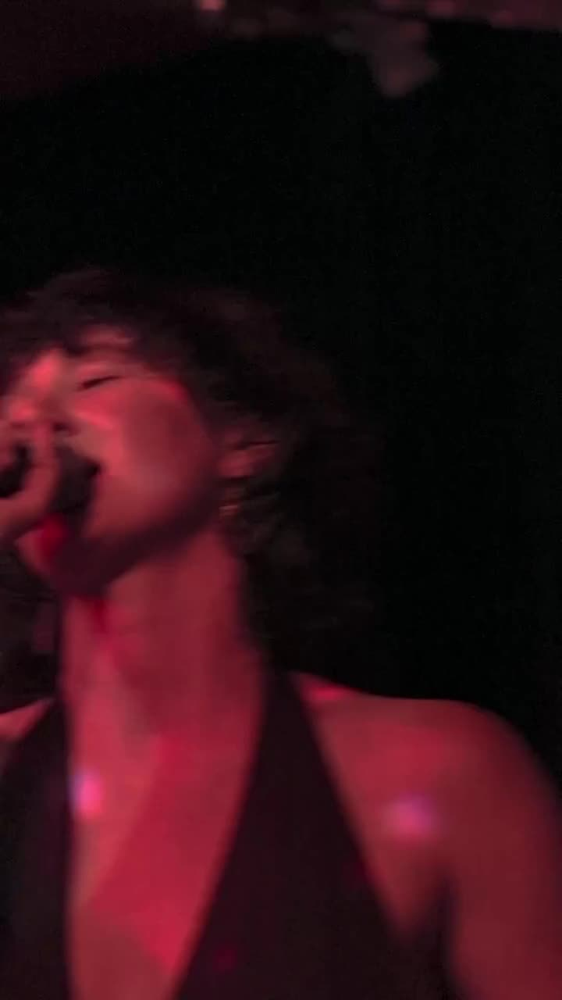
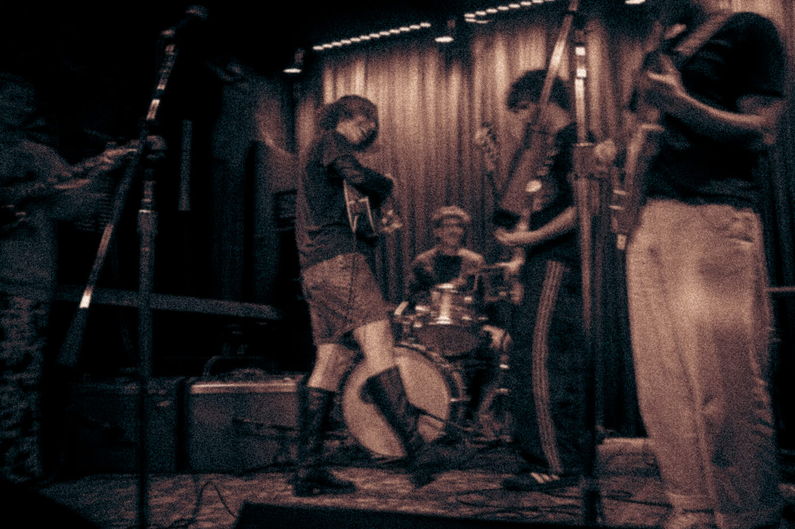
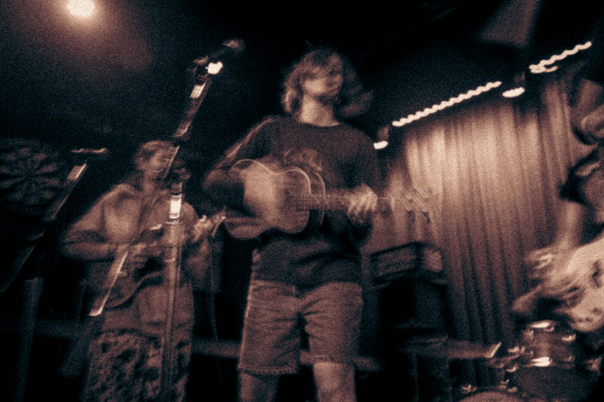
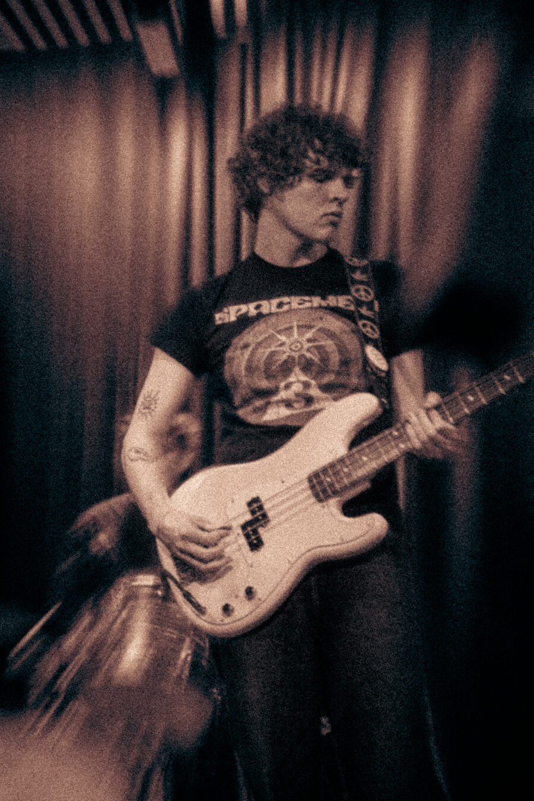
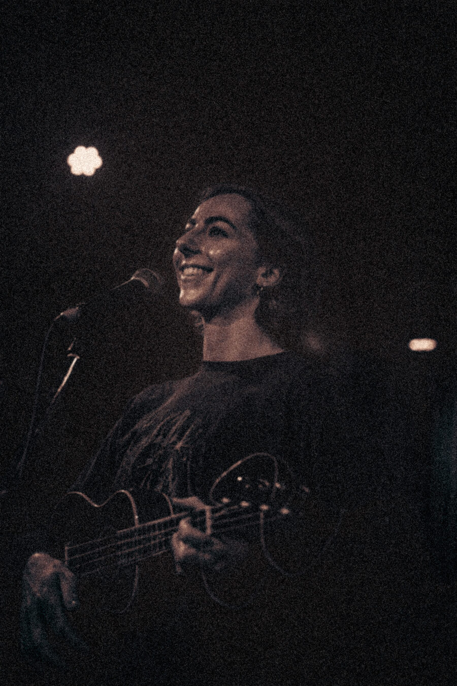
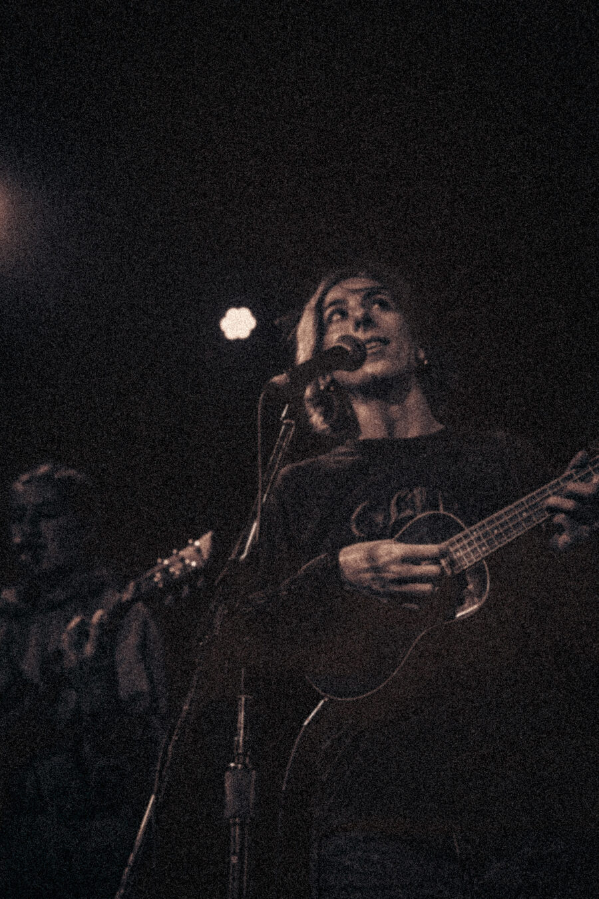
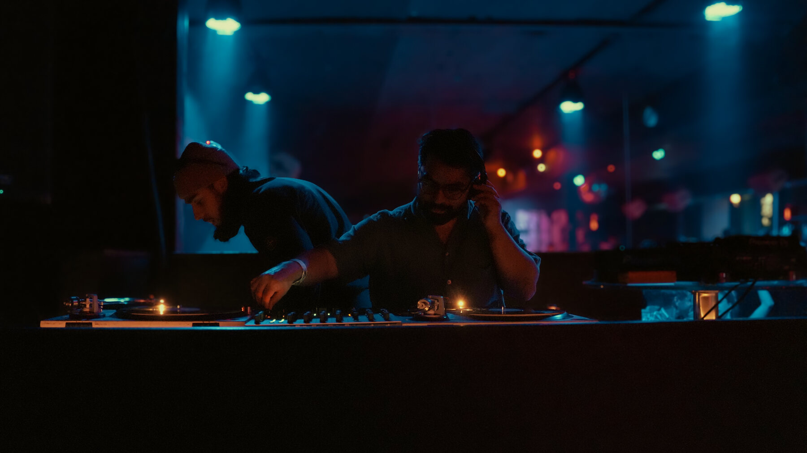
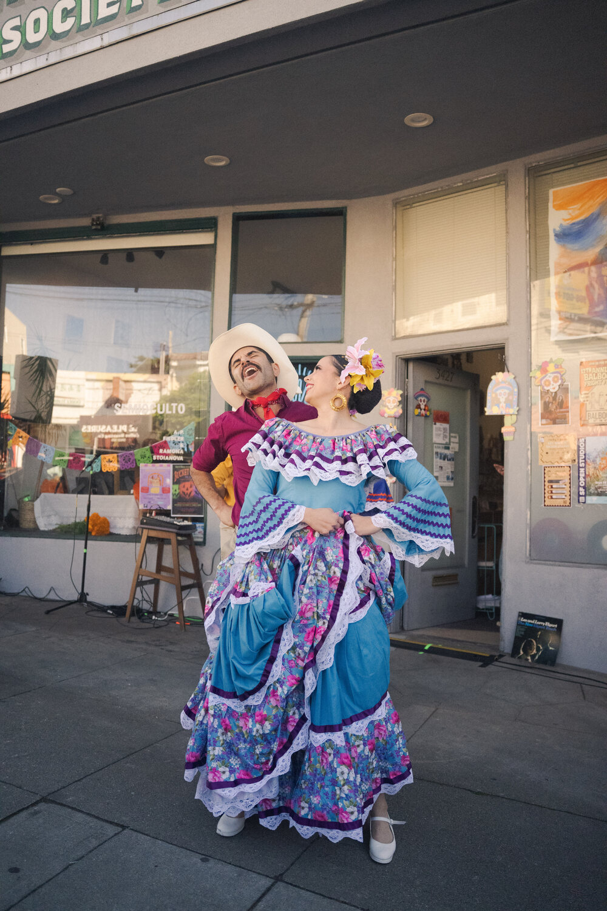
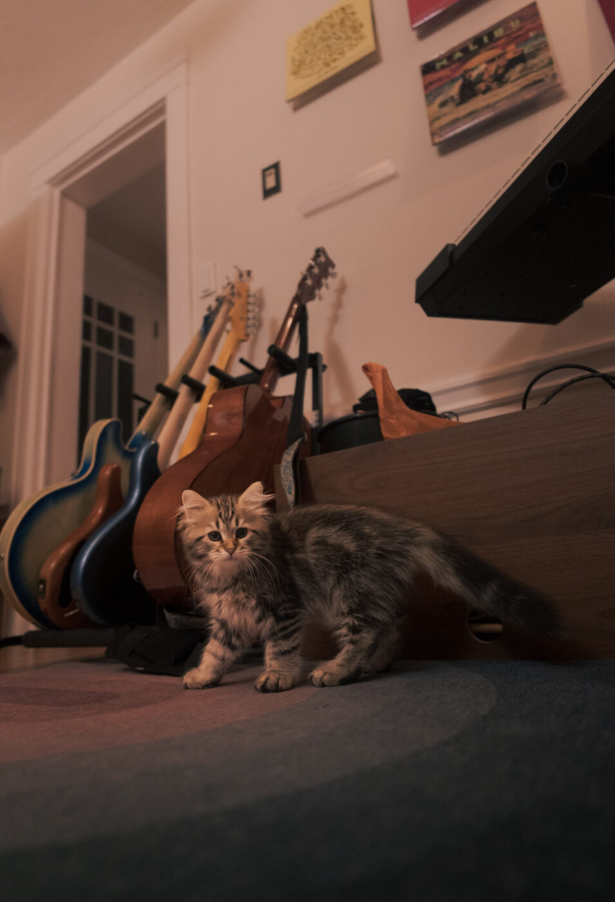
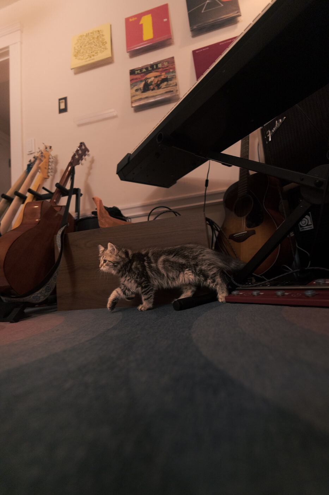

live music, photos, video
Scroll for the work







Playing a show soon?
hi, i'm nick.
I love catching a moment and making art that captures the energy of an artist or a space.
Also, this is my cat.
Looking forward to working with you, cheers

